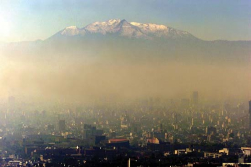
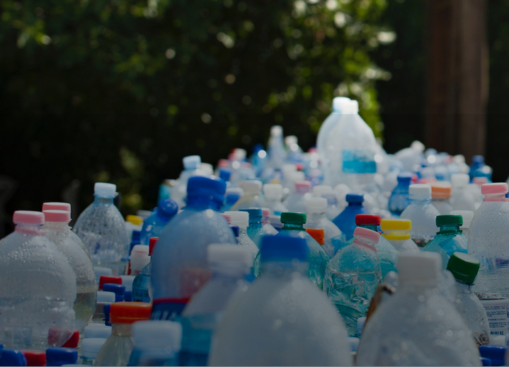
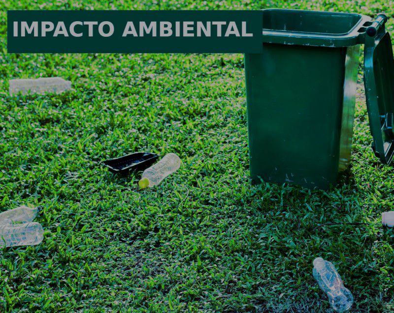

Introduction
The greenhouse effect, produce by gases like CO₂, CH4, NxO, ozone, and water vapor, is a phenomenon
that
allows to maintain life as we know it, since if it does not exist, the average of temperature of the
Earth
will be -19°C approximately. This effect has been in equilibrium, since the earth, by itself, has
biotic
and
abiotic mechanisms that allows decrease the amount atmospheric of these gases. On the biological
side,
we
have that CO₂ plays a very important role in the ecosystems of the planet since, it is a metabolite
produced
by the most living beings as a secondary product of cellular respiration. On the other hand, it is
the
primary source of carbon for the production of sugars in photosynthesis. On the abiotic side, we
have
that
the water bodies, specially oceans are capable to assimilate this gas, thereby reducing the
atmospheric
concentration and facilitating the access of marine organisms to this source.

However, since the beginning of industrial revolution, the use of machines that emit greenhouse gases
increased significantly, this in combination with high rate of deforestation, which deprives the planet
of its main terrestrial filters, has caused the concentration of atmospheric CO₂ pass through dramatic
increases, since before this time, it has a range between 280 to 385 ppm and at the end of the 20th
century it was estimated a range of 700 to 1000 ppm.
There is a growing scientific evidence that high absorption of CO₂ by the oceans, has occasioned an
important increase in the average oceanic acidity in comparison with pre-industrial levels. According to
Intergovernmental Panel on Climate Change (IPCC), continued CO₂ emissions in line with current trends,
could make the oceans up to 150% more acidic in 2100 than they were at the beginning of the
Anthropocene.
The CO2 that has been diffused in the water, reacts in the following way:
H_2 O+CO_2↔H_2 〖CO〗_3↔ 〖HCO〗_3^-+H^+
The free hydrogen proton can react with the carbonate ion to produce bicarbonate
H^++〖CO〗_3^(2-)↔ 〖HCO〗_3^-
This reaction has profound impacts on biologic systems, since bicarbonate is considered a building block
in the species calcification process, so a reduction in carbonate pool limits the growth of these
organisms. With a reduce size the amount of food decreases and therefore the food-web is affected with
the reduction of organisms of most aquatic species, that includes species of commercial value for human
society and therefore ends up impacting in the economy.
Protons that do not react with free carbonate cause that pH of the medium to decrease and it has
estimated that last 20 years the reduction is 0.1 pH units which can interpreted as a 26% increase water
acidity. Carbonate ions are a basic building block of skeletons and shells for a large number of marine
organisms including corals, seafood and marine plankton. Some of this smaller calcifying plankton are
important source of food for higher marine organisms. Therefore, ocean acidification could have profound
impacts in some of the most fundamental biological and geochemical processes of the sea in the coming
decades.
It is estimated that if the emission rate of this gas continues in this way, by the end of the century
the acidity of the seas will have increased by 150%, levels that have not been experienced for more than
20 million years.
In addition, acidification decreases the ability of ocean to absorb additional atmospheric CO₂, which
implies that future CO₂ emissions lead to faster global warming, it is estimated that ocean absorb
around 430 billion tons of atmospheric CO₂ or approximately a third of anthropogenic carbon emissions.
This absorption has benefited humanity by reduce significantly the levels of greenhouses gases in
atmosphere, thereby minimizing global warming.

On the other hand, at the beginning of the years nobody imagined that plastic, which was supposed to be
of great help for the development of human society given the versatility it possesses and therefore the
variety of applications it can have, would have an opposite effect counterproductive in the environment,
since in recent years the increase in the production of these synthetic polymers derived from petroleum
has profoundly impacted the marine environment and the different species that inhabit it. The excessive
production and poor regulation with this material has been such that the most dramatic case known is the
new continent of garbage located in the Pacific Ocean, which is mainly composed of plastic. The main
problem with these materials, in addition to the little regulation that exists in their production, is
that they are petroleum-derived polymers that are chemically modified to obtain some characteristic of
interest, so they have different properties from the polymers found in nature (such as cellulose,
chitin, glycogen, etc.), this results in the degradation by microorganisms is very slow prolonging their
life in the environment which leads to their accumulation. In Mexico, the annual consumption of plastics
per inhabitant in 2005 was estimated at 49 kilograms. Of the total consumed, more than one million tons
per year become waste. The presence of these plastics in the seas is variable, but there are reports of
abundance of 3 to 5 kg/km^2, With records of up 30kg/km^2. in addition to this, the recycling rate is
very low since of the 300 million tons produced annually in the country, only 3 % are recycled.

Good regulation standards are necessary to help in the conservation of environment, however,
removing
plastic from our daily lives would seem an almost impossible task since it has permeated different
social, economic and even cultural levels, so is important to search alternatives.